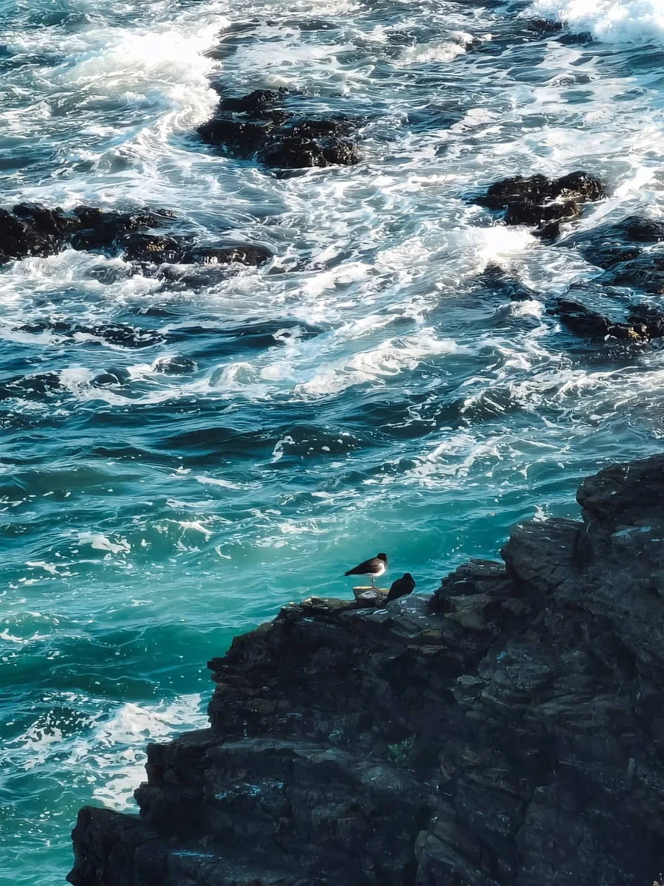

Off the clock
Behind the camera
I shoot photos and videos, and edit and colour grade them myself. Mostly travel, plus whatever I find nice or useful at the time.

For work
This is what I've done so far. I'm always learning and I enjoy trying new things, so this list keeps growing.
Building and evaluating LLM systems: RAG and GraphRAG, knowledge graphs, AI agents and tool use, and multimodal pipelines with speech and avatars.
Deploying models as reliable services, monitoring them, and connecting them to the systems a business already runs on.
Automating workflows inside Microsoft 365 and outside it through APIs. Usually human-in-the-loop, so people stay in control of the decisions that matter.
Gathering requirements, explaining things in each audience's language, and working out where AI actually pays off.
What I'm making
I wanted a gym app that doesn't let me off the hook. Miss a workout and you either burn a freeze token or make it up within 48 hours. Otherwise your streak goes back to zero.
Get it on Google PlayAgents find topics worth a video, edit my footage through Claude Code with an open-source video editor and motion graphics framework, and use vidIQ to write titles and schedule uploads based on stats. It's human-in-the-loop: I shoot my opinions and review the edit before anything goes public.
A mod for kids in low-resource settings learning English as a second language. I'm building it with teachers, for classrooms as they are today, not as I assume they are.
What I've made
Helps school students get better at writing in English by chatting with a friendly AI tutor that corrects one mistake at a time.
12 structured activities on Groq-hosted LLMs, with a shared pool of API keys that balances load and stays under daily rate limits. Served with Gunicorn.
A digital human you can talk to out loud. It listens, answers from its own knowledge base, and speaks back with a lip-synced face.
RAG on local Ollama models and Edge TTS, each served as a FastAPI endpoint, with speech recognition and NVIDIA Audio2Face animating a MetaHuman in Unreal Engine.
A chatbot that answers questions about history. I tested whether it answers better when retrieval understands when things happened, not just what happened.
Standard RAG compared with time-aware RAG on 916 synthetic Q&A pairs made with RAGAS, plus a GraphRAG version on Neo4j. Runs locally with Ollama and Docker.
Off the clock
I shoot photos and videos, and edit and colour grade them myself. Mostly travel, plus whatever I find nice or useful at the time.

Building something serious, or just want to chat about any of this? My inbox is open.
Say hi